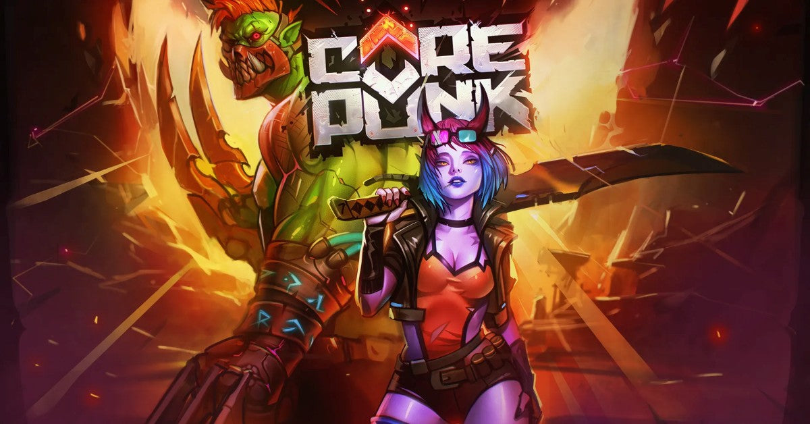

FIQUE POR DENTRO05 PUBLICAÇÕES
Notícias.
O que acontece nos mundos.
Atualizações, lançamentos e descobertas.
As últimas matérias do Dihhz MMORPG.
Últimas notícias
MAIS RECENTES PRIMEIRO
Corepunk: pontos de controle e Game Master nas últimas atualizações
Confira os anúncios recentes da Artificial Core sobre as disputas no mundo aberto.
Ler notícia ↗Corepunk: um mundo para descobrir além da névoa
Exploração, combate e a história do acesso antecipado do MMORPG.
Ler notícia ↗ArcheAge Chronicles: o que sabemos sobre o lançamento
Confira a situação do lançamento na Steam e conheça Auroria.
Ler notícia ↗
AION 2: lançamento previsto para 5 de outubro
As datas informadas pela Steam e a proposta da próxima aventura.
Ler notícia ↗Albion Online: um mundo aberto feito pelos jogadores
Conheça o MMORPG sandbox e seus diferentes caminhos.
Ler notícia ↗